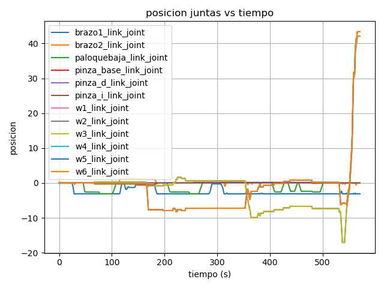
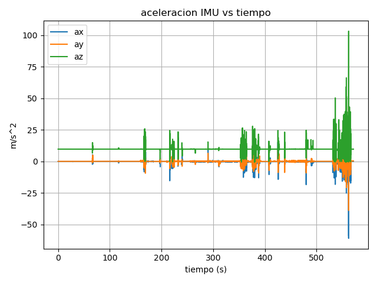
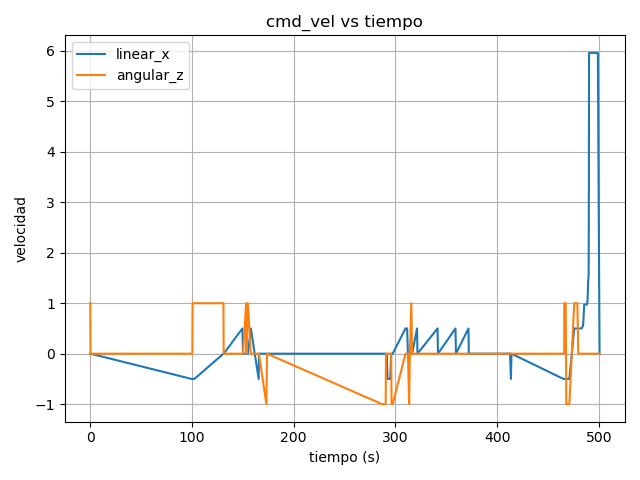

La tarea
La práctica consiste en teleoperar un robot móvil con brazo manipulador para ejecutar una
secuencia de tres acciones. La manipulación se realiza con el plugin MoveIt
y la navegación de la base con teleop_twist_keyboard publicando comandos
de velocidad en /cmd_vel.
Posicionado frente al robot. El brazo se telecopera con MoveIt hasta asir el cubo y depositarlo en el compartimento del robot.
El cubo azul se encuentra a la izquierda. Con el brazo se recoge y se coloca sobre el cubo rojo situado a la derecha del robot.
Mediante teleop_twist_keyboard se publica velocidad lineal positiva en X hasta completar 10 metros de trayectoria rectilínea.
Captura de datos con rosbag
ros2 bag record /cmd_vel /imu /joint_states \ -o practica3_bag
El rosbag captura los tres topics durante toda la ejecución de la secuencia.
Rosbag
Capturas RViz
Captura de RViz mostrando el robot con los TFs visibles, la interfaz de joint_state_publisher_gui activa y al menos tres articulaciones desplazadas respecto a su posición de reposo.


Imágenes de simulación
Imágenes del entorno simulado mostrando los momentos clave de la teleoperación.


Imágenes de /img
Esta galería carga automáticamente las imágenes disponibles en la carpeta local img/.
Visor URDF 3D
Carga tu archivo .urdf (o .urdf.xacro ya procesado) para visualizar el árbol de links y joints interactivamente en 3D. Usa los sliders para rotar las articulaciones y el ratón para orbitar.
Por fallos de orientación/carga en las meshes dg, da, ig e ia,
no se muestran en el visor. Se mantienen como enlaces fijos dentro de la jerarquía del URDF.
Árbol de transformadas
El árbol TF representa las relaciones geométricas (traslación + rotación) entre
cada frame del robot publicadas en el topic /tf y /tf_static.
Se genera con:
ros2 run tf2_tools view_frames
Gráficas

Análisis
La gráfica muestra el ángulo acumulado (en radianes) de cada rueda del robot a lo largo del tiempo. Durante las fases de manipulación con el brazo, las ruedas permanecen estáticas (posición constante). Al iniciarse la fase de desplazamiento rectilíneo de 10 m, se observa un incremento lineal y simétrico en ambas ruedas, indicando movimiento hacia adelante sin giro. Cualquier asimetría transitoria refleja correcciones del operador durante la teleoperación.

Análisis
Los datos de la IMU reflejan la aceleración lineal del chasis. En reposo se aprecia la componente gravitatoria en Z (~9.81 m/s²). Los picos transitorios en X corresponden a los arranques y paradas de la base durante la teleoperación. Los movimientos del brazo introducen vibraciones de alta frecuencia de baja amplitud, visibles como ruido sobre la señal base. La fase de avance rectilíneo muestra una aceleración positiva inicial seguida de valor cercano a cero en régimen estacionario.

Análisis
El campo effort de /joint_states representa el par (torque)
aplicado en cada articulación. Durante la recogida del cubo verde se detectan picos de
esfuerzo en los joints distales del brazo al soportar el peso del objeto.
Al apilar el cubo azul sobre el rojo, el esfuerzo aumenta en los joints proximales que
deben compensar el momento de inercia del brazo extendido. Durante el avance de 10 m,
el esfuerzo en los joints de las ruedas se mantiene aproximadamente constante.
Comandos clave
Lanzar simulación
ros2 launch my_robot_pkg simulation.launch.py
Arrancar MoveIt
ros2 launch moveit_config demo.launch.py
Teleoperación de la base
ros2 run teleop_twist_keyboard teleop_twist_keyboard \ --ros-args -r /cmd_vel:=/cmd_vel
Graficar datos del rosbag
import rosbag2_py, matplotlib.pyplot as plt # Leer mensajes de /joint_states, /imu y /cmd_vel # Extraer stamps, positions, effort, linear_acceleration # Graficar con matplotlib